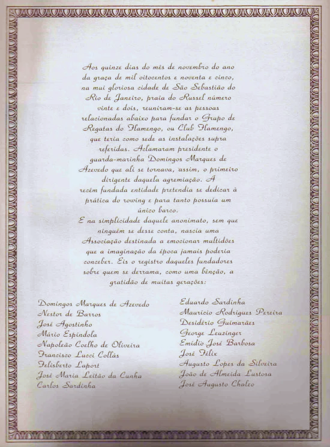
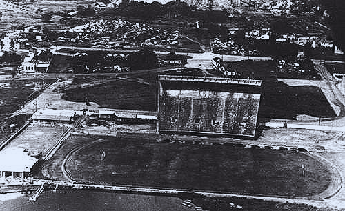

Fundado em 17 de novembro de 1895 no bairro do Flamengo, o Clube de Regatas do Flamengo começou como um clube de remo e rapidamente se tornou uma referência do esporte brasileiro.
Ao longo de sua trajetória, o clube acumulou grandes conquistas e formou gerações marcantes, passando por títulos estaduais, nacionais e internacionais que solidificaram sua fama de “mileurão”.
Momentos memoráveis incluem a conquista da primeira Copa Libertadores em 1981, a era dourada de Zico e o time campeão brasileiro e sul-americano em 2019.
-

1895: Fundação do clube no Rio de Janeiro. -
 1912: Primeiro time do Flamengo.
1912: Primeiro time do Flamengo. -

1940: Construção do estádio Gavéa.